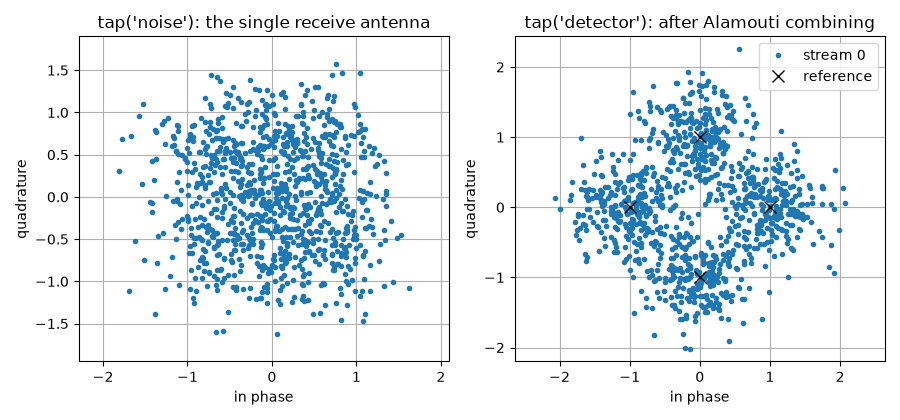
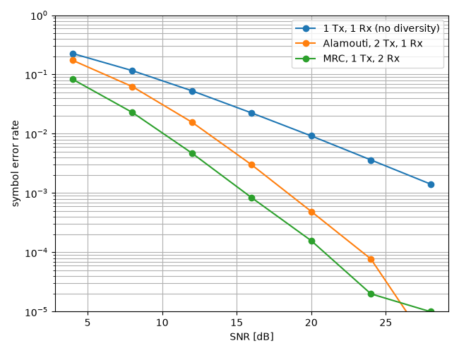

Alamouti Space-Time Coding Tutorial#
This tutorial explains what a space-time code buys you, on the simplest and most widely deployed one: the Alamouti scheme.
Note
Before you start. MIMO Chain Tutorial introduced the multi-antenna channel and its detectors, all of which assumed the receiver knows the channel and the transmitter does not. This tutorial asks what the transmitter can do without that knowledge.
What you’ll learn:
Why a fading channel is limited by its deep fades, not by its average.
How to build a two-antenna Alamouti transmitter and its receiver with
comnumpy.Why the receiver needs only a matched filter, and why that is optimal.
How to measure the diversity gain, and the 3 dB it costs against receive diversity.
This tutorial is suited for engineers and students learning about MIMO systems, combining practical examples with theoretical background.
Introduction#
Why diversity#
Over a flat Rayleigh channel \(y[n] = h\,x[n] + b[n]\), the instantaneous signal-to-noise ratio is proportional to \(|h|^2\), which is exponentially distributed. The receiver is therefore not limited by the average channel: it is limited by the probability that the channel is nearly zero. That probability behaves as
so the error rate decays only as \(1/\mathrm{SNR}\) – one decade per decade. Ten more decibels buy one decade of error rate, which is a poor exchange.
If instead the receiver observes the symbol through \(d\) independent fading coefficients, all of them must be small at once for the link to fail, and
The exponent \(d\) is the diversity order, and it is the slope of the error curve on a log-log plot. Getting \(d = 2\) with two receive antennas is easy – that is maximum ratio combining (MRC). Getting it with two transmit antennas and a single receive antenna is the problem Alamouti solved, and it is the useful one: antennas are expensive on a handset and cheap on a base station.
The difficulty is that a transmitter has no channel knowledge. Sending the same symbol from both antennas gives \(y = (h_1 + h_2)x + b\), and \(h_1 + h_2\) is one Gaussian coefficient: no diversity at all.
The Alamouti scheme#
The idea is to spread two symbols over two antennas and two time slots, in a pattern that makes the two observations orthogonal. Over one codeword the two antennas transmit
the first column being the first time slot and the second column the second. With one receive antenna and a channel \(\mathbf{h} = \left[h_1, h_2\right]\) constant over the two slots, the receiver observes
Conjugating the second equation makes the pair linear in \(\left(s_1, s_2\right)\):
and the matrix \(\mathbf{H}_{\mathrm{eq}}\) is orthogonal:
That single identity is the whole scheme. It means the two symbols do not interfere at all, so the maximum-likelihood detector is not a search but a matched filter,
and each symbol comes out with its SNR multiplied by \(\left|h_1\right|^2 + \left|h_2\right|^2\) – the sum of two independent fadings, hence diversity order 2. The code carries two symbols in two slots, so its rate is 1 symbol per channel use: the diversity is free in bandwidth.
Note
comnumpy stores every space-time code by its linear dispersion
matrices, \(\mathbf{G}(\mathbf{s}) = \sum_k \mathbf{A}_k s_k +
\mathbf{B}_k s_k^{*}\), and builds the real equivalent channel from
them. The orthogonality identity above is checked when the code
object is created, so a code that declares itself orthogonal and is
not cannot be used at all. The constant it is orthogonal up to is
measured at the same time and reused by the decoder.
Prerequisites#
Ensure you have the following Python libraries installed:
numpy
matplotlib
comnumpy
Simulation Setup#
Import Libraries#
import numpy as np
import matplotlib.pyplot as plt
from comnumpy import sweep
from comnumpy.core import Sequential
from comnumpy.core.generators import SymbolGenerator
from comnumpy.core.mappers import SymbolDemapper, SymbolMapper
from comnumpy.core.metrics import compute_ser, compute_ser_rayleigh_psk
from comnumpy.core.processors import Amplifier
from comnumpy.core.visualizers import plot_error_rate
from comnumpy.core.utils import get_alphabet
from comnumpy.mimo.channels import AWGN, FlatMIMOChannel
from comnumpy.mimo.coding import SpaceTimeDecoder, SpaceTimeEncoder, get_code
from comnumpy.mimo.detectors import LinearDetector
from comnumpy.mimo.utils import rayleigh_channel
Define System Parameters#
The code is taken from the registry by name, exactly as the constellation is taken from get_alphabet:
# Parameters
M = 4
alphabet = get_alphabet("PSK", M)
code = get_code("alamouti")
power = 1 / np.sqrt(code.n_tx) # split the power over the antennas
sigma2 = 0.2
The scaling by \(1/\sqrt{N_t}\) matters for the comparison that follows. Two antennas each transmitting \(|s|^2\) would spend twice the power of a single antenna, which is a 3 dB advantage that has nothing to do with coding. Splitting the power keeps the comparison about diversity alone.
Build the Alamouti Chain#
The whole link is one Sequential: generator, mapper, power split, space-time encoder, channel, noise, decoder, and back to symbol indices. The encoder outputs (n_tx, N T / K) with antennas on axis -2, so it feeds FlatMIMOChannel directly, and the decoder gives the symbols back:
# The Alamouti link, as one chain
H = rayleigh_channel(1, 2, seed=42)
alamouti = Sequential([
SymbolGenerator(M, name="tx"),
SymbolMapper(alphabet),
Amplifier(power),
SpaceTimeEncoder(code),
FlatMIMOChannel(H, name="channel"),
AWGN(sigma2=sigma2, name="noise"),
SpaceTimeDecoder(code, H=H, name="detector"),
Amplifier(1 / power),
SymbolDemapper(alphabet),
], taps=["tx", "noise", "detector"], name="Alamouti 2x1")
alamouti.seed(7) # every stochastic block, reproducibly
s_rx = alamouti(500 * code.n_symbols)
print(f"one-shot SER: {compute_ser(alamouti.tap('tx'), s_rx):.4f}")
Two chain services are used here rather than reimplemented. seed gives every stochastic block an independent child seed, so the run is reproducible; taps records the output of the named blocks without inserting anything into the chain.
The chain, as the chain itself describes it:
flowchart LR
tx["SymbolGenerator"]
symbol_mapper["SymbolMapper"]
signal_amplifier["Amplifier"]
space_time_encoder["SpaceTimeEncoder"]
channel["FlatMIMOChannel"]
noise["AWGN"]
detector["SpaceTimeDecoder"]
signal_amplifier_2["Amplifier"]
symbol_demapper["SymbolDemapper"]
tx --> symbol_mapper
symbol_mapper --> signal_amplifier
signal_amplifier --> space_time_encoder
space_time_encoder --> channel
channel --> noise
noise --> detector
detector --> signal_amplifier_2
signal_amplifier_2 --> symbol_demapper
classDef tapped stroke-dasharray: 4 2
class tx,noise,detector tapped
The diagram above is not drawn by hand. It is what the chain says about
itself – chain.to_mermaid() (decision D33c) – exported by the
script, so the block names are the ones the code uses and a dashed
outline marks a tapped block:
# The chain diagrams this tutorial shows are exported from the chains
# themselves (D33c), so the picture cannot drift from the code -- the
# smoke test compares what a run writes with what the page displays.
mermaid_dir = "../../docs/examples/mermaid/"
for diagram_name, diagram_chain in [("alamouti", alamouti), ("mrc", mrc)]:
with open(f"{mermaid_dir}/{diagram_name}.mmd", "w") as stream:
stream.write(diagram_chain.to_mermaid())
One-Shot Simulation#
What each block costs#
summary runs the chain and tabulates what every block hands to the next one, and what it cost:
# what each block costs and what it hands to the next one (D33b)
alamouti.summary(500 * code.n_symbols)
# block id output shape dtype time ms
0 SymbolGenerator tx (1000,) int64 0.03
1 SymbolMapper symbol_mapper (1000,) complex128 0.00
2 Amplifier signal_amplifier (1000,) complex128 0.00
3 SpaceTimeEncoder space_time_encoder (2, 1000) complex128 0.07
4 FlatMIMOChannel channel (1, 1000) complex128 0.01
5 AWGN noise (1, 1000) complex128 0.04
6 SpaceTimeDecoder detector (1000,) complex128 0.08
7 Amplifier signal_amplifier_2 (1000,) complex128 0.00
8 SymbolDemapper symbol_demapper (1000,) int64 0.07
The shape column is the code at work: 1000 symbols enter, the encoder spreads them over (2, 1000) – two antennas, one thousand channel uses, so rate 1 – one antenna receives, and 1000 symbols come back.
Visualize the combining#
The two panels are two taps of the same run:
# Figure 1: the tapped signals, before and after combining
received = alamouti.tap("noise")[0]
combined = alamouti.tap("detector") / power
fig1, (ax_left, ax_right) = plt.subplots(nrows=1, ncols=2, figsize=(9, 4.2))
ax_left.plot(np.real(received), np.imag(received), ".", markersize=3)
ax_left.set_title("tap('noise'): the single receive antenna")
ax_right.plot(np.real(combined), np.imag(combined), ".", markersize=3)
ax_right.plot(np.real(alphabet), np.imag(alphabet), "kx", markersize=9)
ax_right.set_title("tap('detector'): after Alamouti combining")
for ax in (ax_left, ax_right):
ax.set_xlabel("in phase")
ax.set_ylabel("quadrature")
ax.axis("equal")
ax.grid(True)
plt.tight_layout()
plt.savefig(f"{img_dir}/one_shot_alamouti_fig1.png")
{kind=link}

The left panel is what the single receive antenna sees: two superimposed streams plus noise, with no constellation visible at all. The right panel is the same run after combining, and the four QPSK points are back. Nothing was estimated to get there – only the two conjugations and the matched filter of the equations above.
Monte Carlo Evaluation#
Two references, as chains#
The comparison needs a link without diversity and a link with receive diversity. Both are the same chain with different blocks, and one detector covers them: zero forcing on an \((N_r, 1)\) channel is maximum ratio combining, since the pseudo-inverse of a column vector is \(\mathbf{h}^{H}/\|\mathbf{h}\|^2\):
# The two references are chains differing only in their blocks. Zero
# forcing on an (N_r, 1) channel *is* maximum ratio combining -- the
# pseudo-inverse of a column vector is h^H / ||h||^2 -- so one
# LinearDetector covers both the no-diversity and the diversity case.
siso_H = rayleigh_channel(1, 1, seed=1)
siso = Sequential([
SymbolGenerator(M, name="tx"),
SymbolMapper(alphabet),
FlatMIMOChannel(siso_H, name="channel"),
AWGN(sigma2=sigma2, name="noise"),
LinearDetector(alphabet, H=siso_H, name="detector"),
], taps=["tx"], name="1 Tx, 1 Rx")
mrc_H = rayleigh_channel(2, 1, seed=2)
mrc = Sequential([
SymbolGenerator(M, name="tx"),
SymbolMapper(alphabet),
FlatMIMOChannel(mrc_H, name="channel"),
AWGN(sigma2=sigma2, name="noise"),
LinearDetector(alphabet, H=mrc_H, name="detector"),
], taps=["tx"], name="MRC 1 Tx, 2 Rx")
Sweep the channel#
Averaging over fading means running the chain once per channel realization, and that is a sweep like any other – except that the parameter is the channel. sweep() takes several dotted parameter names at once and zips them, so one sweep point sets the channel the signal goes through and the channel the detector inverts, which is exactly what a realization is:
def average_ser(chain, n_rx, n_tx, snr_dB, stimulus, n_channels, seed=0):
"""Average one chain over independent quasi-static fading draws.
The chain is built once. ``sweep`` takes several dotted parameters
at once and zips them, so one sweep point sets the channel the
signal goes through *and* the channel the detector inverts -- which
is exactly what a fading realization is.
"""
rng = np.random.default_rng(seed)
channels = [rayleigh_channel(n_rx, n_tx, rng=rng)
for _ in range(n_channels)]
chain.set_params(**{"noise.sigma2": 10 ** (-snr_dB / 10)})
results = sweep(chain, ("channel.H", "detector.H"),
[(H, H) for H in channels],
{"ser": compute_ser}, stimulus=stimulus,
reference="tx", seed=seed)
return float(np.mean(results["ser"]))
Note
The accuracy of an average over fading is set by the number of
channel draws, not by the symbol count: the error rate is dominated
by the rare deep fades, and an under-sampled tail reads
systematically low. That is why the draw count grows with the
SNR below, and why the confrontation at 18 dB with twenty times the
draws lives in validation/mimo_diversity_ber.py rather than here.
# Monte-Carlo comparison, at equal total transmit power. The accuracy
# of an average over fading is set by the number of *channel* draws, not
# by the symbol count -- the error rate is dominated by the rare deep
# fades, and an under-sampled tail reads systematically low. Hence more
# draws where the curve is lower, and a range that stops where this
# budget stays honest; validation/mimo_diversity_ber.py carries the
# confrontation to 18 dB with twenty times the draws.
snr_dB_list = np.arange(4, 25, 4)
draws = [1500, 2000, 2500, 3500, 5000, 6000]
n_symbols = 80
curves = {
"1 Tx, 1 Rx (no diversity)": [average_ser(siso, 1, 1, value,
(1, n_symbols), count)
for value, count in zip(snr_dB_list, draws, strict=True)],
"Alamouti, 2 Tx, 1 Rx": [average_ser(alamouti, 1, 2, value, n_symbols,
count)
for value, count in zip(snr_dB_list, draws, strict=True)],
"MRC, 1 Tx, 2 Rx": [average_ser(mrc, 2, 1, value, (1, n_symbols), count)
for value, count in zip(snr_dB_list, draws, strict=True)],
}
Plot the curves against their closed forms#
The three schemes are three readings of one expression, compute_ser_rayleigh_psk(): \(L\) branches evaluated at the per-branch SNR, with a transmit scheme dividing that SNR by \(N_t\) because it splits its power over the antennas.
scheme |
\(L\) |
SNR per branch |
|---|---|---|
1 Tx, 1 Rx |
1 |
\(\bar\gamma\) |
MRC, 1 Tx, \(N_r\) Rx |
\(N_r\) |
\(\bar\gamma\) |
Alamouti, \(N_t\) Tx |
\(N_t N_r\) |
\(\bar\gamma / N_t\) |
plot_error_rate draws measurements as hollow markers and their references as lines of the same colour, so a pair reads as one statement:
# Figure 2: the measurements, and the closed forms they must reach.
# One expression covers the three: L branches at the per-branch SNR,
# and a transmit scheme divides that SNR by N_t because it splits the
# power -- which is the 3 dB Alamouti pays against receive diversity.
fine = np.linspace(snr_dB_list[0], snr_dB_list[-1], 100)
per_bit = 10 ** (fine / 10) / np.log2(M)
theory = {
"1 Tx, 1 Rx (no diversity)": compute_ser_rayleigh_psk(M, per_bit),
"Alamouti, 2 Tx, 1 Rx": compute_ser_rayleigh_psk(M, per_bit / code.n_tx,
diversity=2),
"MRC, 1 Tx, 2 Rx": compute_ser_rayleigh_psk(M, per_bit, diversity=2),
}
ax = plot_error_rate(snr_dB_list, curves, theory=theory, x_theory=fine,
ylabel="symbol error rate",
title=f"{M}-PSK over Rayleigh, equal transmit power")
ax.set_ylim(1e-5, 1)
plt.tight_layout()
plt.savefig(f"{img_dir}/one_shot_alamouti_fig2.png")
{kind=link}

Read the two numbers off the closed form#
The two statements the tutorial is about are exact, so they are taken from the expression rather than fitted to the points; the simulation is what confronts them:
# The two quantitative statements come from the closed form, which is
# exact and free; the simulation is there to confront them. The last
# points read low on purpose: 6000 draws still under-sample the deep
# fades that dominate the average at 24 dB.
exact = {name: compute_ser_rayleigh_psk(
M, 10 ** (snr_dB_list / 10) / np.log2(M) / (code.n_tx if "Alamouti" in name
else 1),
diversity=1 if "no diversity" in name else 2)
for name in curves}
for name, values in curves.items():
ratio = np.array(values) / exact[name]
print(f"{name:28s} measured / closed form "
+ " ".join(f"{value:.2f}" for value in ratio))
# the diversity order, read off the closed form at high SNR
high = np.array([30.0, 40.0])
for name in curves:
reference = compute_ser_rayleigh_psk(
M, 10 ** (high / 10) / np.log2(M) / (code.n_tx if "Alamouti" in name
else 1),
diversity=1 if "no diversity" in name else 2)
slope = np.polyfit(high / 10, np.log10(reference), 1)[0]
print(f"{name:28s} diversity order {-slope:.2f}")
# and the 3 dB Alamouti pays for transmitting blind, exactly
alamouti_snr = 10 ** (np.linspace(0, 30, 601) / 10) / np.log2(M)
target = 1e-3
of = {"MRC": compute_ser_rayleigh_psk(M, alamouti_snr, diversity=2),
"Alamouti": compute_ser_rayleigh_psk(M, alamouti_snr / code.n_tx,
diversity=2)}
needed = {name: np.interp(np.log10(target), np.log10(values)[::-1],
np.linspace(0, 30, 601)[::-1])
for name, values in of.items()}
print(f"SNR for SER = {target:g}: MRC {needed['MRC']:.1f} dB, Alamouti "
f"{needed['Alamouti']:.1f} dB, gap {needed['Alamouti'] - needed['MRC']:.2f} dB "
f"(10log10(N_t) = {10 * np.log10(code.n_tx):.2f} dB)")
1 Tx, 1 Rx (no diversity) measured / closed form 0.99 0.97 0.94 0.90 0.83 0.86
Alamouti, 2 Tx, 1 Rx measured / closed form 0.98 0.92 0.88 0.77 0.84 0.65
MRC, 1 Tx, 2 Rx measured / closed form 0.98 0.91 0.82 0.72 0.73 0.28
1 Tx, 1 Rx (no diversity) diversity order 1.00
Alamouti, 2 Tx, 1 Rx diversity order 2.00
MRC, 1 Tx, 2 Rx diversity order 2.00
SNR for SER = 0.001: MRC 15.6 dB, Alamouti 18.6 dB, gap 3.01 dB (10log10(N_t) = 3.01 dB)
The slope. The single-antenna scheme has diversity order 1, the two others 2 – the error rate falls twice as fast, which is the whole reason a space-time code exists. Read off the closed form the number is exact; read off a simulated curve it is a fit, and it converges to the same value.
The 3 dB. Reaching a symbol error rate of \(10^{-3}\) costs 15.6 dB with two receive antennas and 18.6 dB with Alamouti: a gap of 3.01 dB, against \(10\log_{10} N_t = 3.01\) dB. That is the price of transmitting blind – the receiver knows the channel and weights its branches by \(h_i^{*}\), the transmitter cannot and splits its power evenly. Alamouti buys the full diversity order anyway; it pays only in array gain, not in slope.
And the ratios are the honest part. The measurement tracks the closed form to a few percent at low SNR and drifts below it as the SNR grows, down to 0.28 for the steepest curve: 6000 channel draws no longer sample the deep fades that dominate the average there. Nothing is wrong with either side – validation/mimo_diversity_ber.py runs the same three schemes with up to 80000 draws and lands within 4.4 % of the same curves, and measures the 3 dB gap at 3.0 dB.
Note
The comparison had to be made at equal total transmit power. Had each antenna transmitted the full power, the Alamouti curve would have landed on top of the MRC one and the figure would have proved nothing. That is the \(1/\sqrt{N_t}\) in the chain, and the \(\bar\gamma/N_t\) in the table.
Beyond two antennas#
Alamouti is the only complex orthogonal design of rate 1. Beyond two transmit antennas, orthogonality survives only at a reduced rate – comnumpy ships the designs of Tarokh, Jafarkhani and Calderbank at rates 1/2 and 3/4 for three and four antennas – and above rate 1 nothing is orthogonal at all, so linear decoding is no longer optimal:
from comnumpy.mimo.coding import available_codes, get_code
for name in available_codes():
code = get_code(name)
print(f"{name:22s} Nt={code.n_tx} rate={code.rate:4.2f} "
f"orthogonal={code.is_orthogonal}")
The Golden code sits at the other end of the same trade: rate 2 on two antennas and full diversity, at the price of a decoder that has to search. SpaceTimeDecoder refuses it rather than returning a zero-forcing answer under a name that promises optimality; code.equivalent_channel(H) builds the equivalent channel to hand to one of the detectors of Detectors.
Conclusion#
This tutorial highlighted:
Why a fading link is limited by its deep fades, and what diversity does about it.
How the Alamouti codeword turns two transmit antennas into two independent observations, without any channel knowledge at the transmitter.
Why the resulting receiver is a matched filter and why that is exactly maximum likelihood.
That the measured slope doubles, and that Alamouti pays 3 dB against receive diversity for transmitting blind.
With comnumpy, a space-time code is an object taken from a registry, its orthogonality is verified rather than assumed, and the encoder and decoder are ordinary chain blocks.
Everything so far has taken the constellation for granted: \(M\) points, each sent as often as the others. Probabilistic Shaping questions that last assumption, and recovers up to 1.53 dB from it.